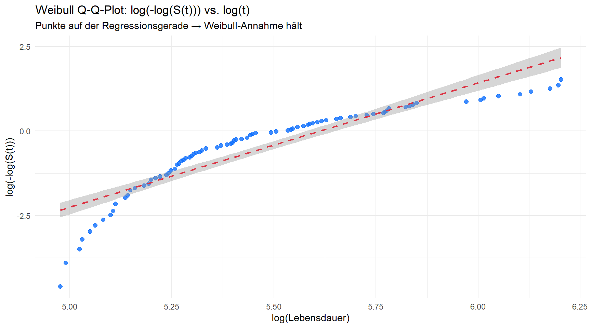
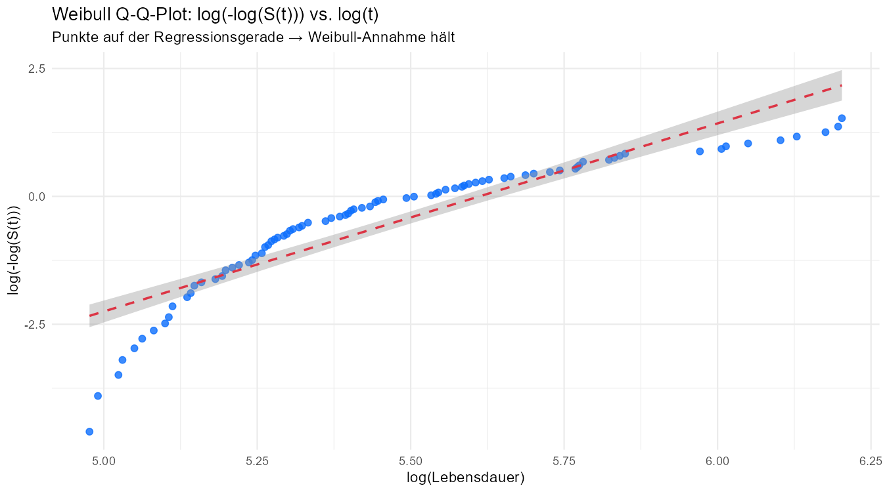
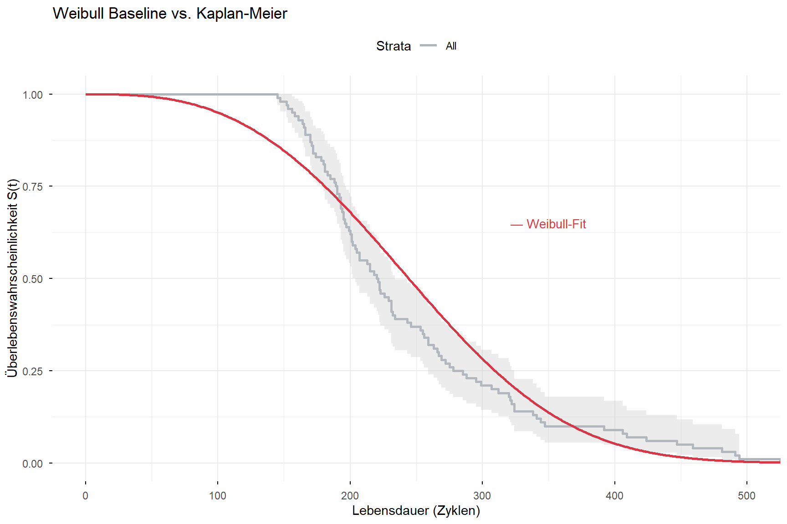
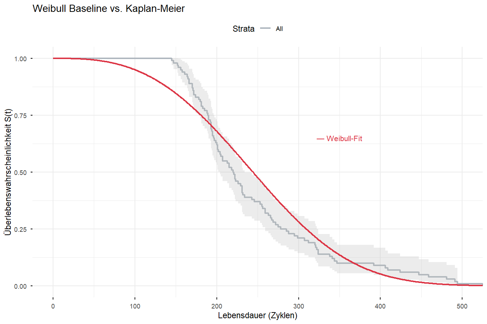

# renv mit absolutem Pfad aktivieren (relativ zur qmd-Datei, nicht root.dir)renv_path <-file.path(dirname(knitr::current_input(dir =TRUE)), "..", "renv", "activate.R")source(renv_path)source("shiny-app/R/data_loader.R")library(tidyverse)library(survival) # Surv()library(survminer) # ggsurvplot()library(flexsurv) # flexsurvreg() → Weibull AFTlibrary(kableExtra)library(conflicted)conflict_prefer("select", "dplyr")conflict_prefer("filter", "dplyr")source("shiny-app/R/data_loader.R")train <-load_train_fd003(base_path ="../data/raw/CMaps")# Eine Zeile pro Engine: Lebensdauer + letzte Sensorwerte# Für AFT brauchen wir einen Zustandswert pro Engine, nicht eine Zeitreihe.# Wir nehmen die Mittelwerte der letzten 20 Zyklen als repräsentativen# "End-of-Life"-Zustand der Engine.lifetimes <- train %>%group_by(unit_number) %>%summarise(lifetime =max(time_in_cycles),event =1L,# Letzte 20 Zyklen mitteln → stabiler als nur letzter Zyklusacross(starts_with("sensor_"), ~mean(tail(.x, 20)), .names ="{.col}_mean") ) %>%ungroup()cat("Datensatz für AFT-Modell:", nrow(lifetimes), "Engines\n")
Datensatz für AFT-Modell: 100 Engines
Code
cat("Spalten:", ncol(lifetimes), "\n")
Spalten: 19
Datensatz für AFT-Modell: 100 Engines
1. Annahmen-Check: Weibull Q-Q-Plot
Bevor wir das Weibull-Modell fitten, prüfen wir ob die Weibull-Annahme überhaupt zu den Daten passt.
Methode: Wenn die Lebensdauern Weibull-verteilt sind, gilt:
Das ist eine Gerade auf der log-log-Skala. Wir entnehmen \(\hat{S}(t)\) aus dem KM-Schätzer und plotten die transformierten Werte gegen log(t). Punkte auf einer Geraden → Weibull-Annahme hält.
Code
# KM-Schätzer für alle Engineskm_basis <-survfit(Surv(lifetime, event) ~1, data = lifetimes)# KM-Werte extrahieren: Zeit und Überlebenswahrscheinlichkeitkm_df <-data.frame(t = km_basis$time,St = km_basis$surv) %>%filter(St >0& St <1) %>%# log(-log(0)) und log(-log(1)) undefiniertmutate(log_t =log(t),log_neg_logS =log(-log(St)) # Weibull-Transformation )# Q-Q-Plot: Punkte sollten auf einer Geraden liegenp_qq <-ggplot(km_df, aes(x = log_t, y = log_neg_logS)) +geom_point(color ="#0d6efd", size =2, alpha =0.8) +geom_smooth(method ="lm", se =TRUE,color ="#dc3545", linetype ="dashed", linewidth =0.8) +labs(title ="Weibull Q-Q-Plot: log(-log(S(t))) vs. log(t)",subtitle ="Punkte auf der Regressionsgerade → Weibull-Annahme hält",x ="log(Lebensdauer)",y ="log(-log(S(t)))" ) +theme_minimal()p_qq

Code
ggsave("reports/figures/weibull_qq.png", p_qq, width =9, height =5, dpi =150)# Linearitätsmaß: R² der Regressionsgeradenlm_qq <-lm(log_neg_logS ~ log_t, data = km_df)cat("R² des Q-Q-Plot-Fits:", round(summary(lm_qq)$r.squared, 4), "\n")
R² des Q-Q-Plot-Fits: 0.8234
Steigung (≈ Shape β): 2.863

Weibull Q-Q-Plot
Interpretation: R² = 0.82 — ausreichend für eine parametrische Weibull-Annahme. Die Steigung von 2.86 ist konsistent mit dem Shape β = 2.93 aus der EDA. Abweichungen an den Enden sind bei n = 100 normal. Wir können mit dem Weibull-Modell fortfahren, aber die bekannte Bimodalität der Lebensdauern wird das Modell nicht perfekt beschreiben.
2. Modell 1: Weibull AFT ohne Covariaten (Baseline)
Das Baseline-Modell ist das parametrische Äquivalent zur KM-Kurve aus dem vorherigen Notebook — keine Prädiktoren, nur die Weibull-Verteilung der Lebensdauern. Das entspricht dem Fit aus der EDA, jetzt über flexsurvreg().
Code
# Weibull AFT ohne Covariaten# dist = "weibullPH" wäre das PH-Parametrisierung; "weibull" ist AFT-Parametrisierungweibull_basis <-flexsurvreg(Surv(lifetime, event) ~1,data = lifetimes,dist ="weibull")print(weibull_basis)
Call:
flexsurvreg(formula = Surv(lifetime, event) ~ 1, data = lifetimes,
dist = "weibull")
Estimates:
est L95% U95% se
shape 2.929 2.552 3.362 0.206
scale 276.818 257.783 297.259 10.062
N = 100, Events: 100, Censored: 0
Total time at risk: 24720
Log-likelihood = -586.5383, df = 2
AIC = 1177.077
Call:
flexsurvreg(formula = Surv(lifetime, event) ~ 1, data = lifetimes, dist = "weibull")
Estimates:
est L95% U95% se
shape 2.929 2.552 3.362 0.206
scale 276.818 257.783 297.259 10.062
N = 100, Events: 100, Censored: 0
Total time at risk: 24720
Log-likelihood = -586.5383, df = 2
AIC = 1177.077
Code
# Parameter extrahieren und verständlich darstellenparams_basis <- weibull_basis$res# flexsurv gibt shape und scale aus (nicht beta/eta direkt)shape_hat <- params_basis["shape", "est"]scale_hat <- params_basis["scale", "est"]cat("=== Weibull Baseline (ohne Covariaten) ===\n\n")
cat("β > 1 → Verschleißausfall (steigende Ausfallrate mit dem Alter)\n")
β > 1 → Verschleißausfall (steigende Ausfallrate mit dem Alter)
Code
cat("η =", round(scale_hat, 1), "→ 63.2% der Engines fallen bis zu diesem Zyklus aus\n")
η = 276.8 → 63.2% der Engines fallen bis zu diesem Zyklus aus
=== Weibull Baseline (ohne Covariaten) ===
Shape β: 2.929
Scale η: 276.8 Zyklen
AIC: 1177.08
β > 1 → Verschleißausfall (steigende Ausfallrate mit dem Alter)
η = 276.8 → 63.2% der Engines fallen bis zu diesem Zyklus aus
Code
# Weibull-Kurve vs. KM-Kurve: wie gut passt das parametrische Modell?p_baseline <-ggsurvplot( km_basis,data = lifetimes,conf.int =TRUE,xlab ="Lebensdauer (Zyklen)",ylab ="Überlebenswahrscheinlichkeit S(t)",title ="Weibull Baseline vs. Kaplan-Meier",palette ="#adb5bd",ggtheme =theme_minimal())# Weibull-Kurve über den KM-Plot legent_seq <-seq(0, max(lifetimes$lifetime), by =1)surv_weibull <-pweibull(t_seq,shape = shape_hat,scale = scale_hat,lower.tail =FALSE)weibull_line <-data.frame(time = t_seq, surv = surv_weibull)p_baseline$plot <- p_baseline$plot +geom_line(data = weibull_line,aes(x = time, y = surv),color ="#dc3545", linewidth =1, linetype ="solid",inherit.aes =FALSE) +annotate("text", x =350, y =0.65,label ="— Weibull-Fit", color ="#dc3545", size =3.5)print(p_baseline)

Code
png("reports/figures/weibull_baseline.png", width =9, height =6,units ="in", res =150)print(p_baseline)dev.off()
png
2

Weibull Baseline vs. KM
Interpretation:
Die Weibull-Kurve (rot) folgt dem KM-Schätzer gut, weicht aber im mittleren Bereich leicht ab — ein Zeichen der bekannten Bimodalität, die eine unimodale parametrische Verteilung nicht perfekt abbilden kann.
Die Basis-Parameter sind konsistent mit der EDA: β ≈ 2.9, η ≈ 270-280.
3. Sensor-Auswahl für das AFT-Modell
Für das Covariaten-Modell können wir nicht alle 12 finalen Sensoren nehmen — bei 100 Datenpunkten und 12 Prädiktoren wäre das Modell überangepasst (n/p-Verhältnis zu klein). Wir wählen gezielt nach zwei Kriterien:
Stärke der Korrelation mit RUL (aus EDA): hohe absolute Korrelation = starker Prädiktor
Keine paarweise Hochkorrelation (aus VIF-Check): sensor_4 und sensor_11 haben r = 0.85 → nur einen davon nehmen
# Korrelationen der finalen Sensoren mit Lifetime (hier: Gesamtlebensdauer)# Wir nutzen den Mittelwert der letzten 20 Zyklen als Sensor-Featuresensor_mean_cols <- lifetimes %>%select(ends_with("_mean")) %>%names()korr_df <- lifetimes %>%select(lifetime, all_of(sensor_mean_cols)) %>%cor(use ="complete.obs") %>%as.data.frame() %>%rownames_to_column("variable") %>%filter(variable !="lifetime") %>%select(variable, lifetime) %>%rename(korrelation = lifetime) %>%mutate(abs_korr =abs(korrelation)) %>%arrange(desc(abs_korr))korr_df %>%kable(digits =3,caption ="Korrelation der Sensor-Mittelwerte (letzte 20 Zyklen) mit Gesamtlebensdauer") %>%kable_styling(bootstrap_options =c("striped", "hover"))
Korrelation der Sensor-Mittelwerte (letzte 20 Zyklen) mit Gesamtlebensdauer
variable
korrelation
abs_korr
sensor_6_mean
-0.630
0.630
sensor_15_mean
-0.611
0.611
sensor_12_mean
0.605
0.605
sensor_7_mean
0.604
0.604
sensor_8_mean
0.593
0.593
sensor_10_mean
0.591
0.591
sensor_13_mean
0.586
0.586
sensor_20_mean
0.582
0.582
sensor_21_mean
0.581
0.581
sensor_3_mean
0.403
0.403
sensor_2_mean
-0.384
0.384
sensor_17_mean
0.377
0.377
sensor_14_mean
0.318
0.318
sensor_9_mean
0.309
0.309
sensor_4_mean
-0.271
0.271
sensor_11_mean
0.184
0.184
Code
# Paarweise Korrelation der Top-Kandidaten prüfen# sensor_4 und sensor_11 haben r = 0.85 aus der EDA → nur sensor_11 (stärkere Korr.)top_kandidaten <-c("sensor_11_mean", "sensor_17_mean","sensor_3_mean", "sensor_2_mean")korr_kandidaten <- lifetimes %>%select(all_of(top_kandidaten)) %>%cor(use ="complete.obs")cat("Paarweise Korrelationsmatrix der gewählten Prädiktoren:\n\n")
Paarweise Korrelationsmatrix der gewählten Prädiktoren:
sensor_3 (TR = 1.07): Schwacher positiver Effekt, aber signifikant.
sensor_2 (TR = 0.36): Einziger negativer Prädiktor — höherer sensor_2 verkürzt die Überlebenszeit auf 36% des Ausgangswertes. sensor_2 steigt bei Degradation an.
5. Überlebensfunktionen für typische Sensor-Profile
Um das Modell greifbar zu machen, schätzen wir die Überlebensfunktion für zwei kontrastive Engine-Profile: einen “gesunden” Zustand (günstige Sensorwerte) und einen “degradierten” Zustand (ungünstige Sensorwerte, nahes Versagen).
Code
cat("=== Hinweis: Profil-Vergleich zwar dargestellt aber instabil===\n\n")
=== Hinweis: Profil-Vergleich zwar dargestellt aber instabil===
Code
cat("Die vier Sensor-Prädiktoren zeigen in den letzten 20 Zyklen\n")
Die vier Sensor-Prädiktoren zeigen in den letzten 20 Zyklen
Code
cat("kaum Streuung zwischen den Engines (sd_last sensor_11 = 0.059).\n")
kaum Streuung zwischen den Engines (sd_last sensor_11 = 0.059).
Code
cat("Alle FD003-Engines konvergieren gegen Ende auf ähnliche Sensorwerte\n")
Alle FD003-Engines konvergieren gegen Ende auf ähnliche Sensorwerte
Code
cat("(Degradations-Konvergenz). Ein Profil-Vergleich würde Extrapolation\n")
(Degradations-Konvergenz). Ein Profil-Vergleich würde Extrapolation
Code
cat("außerhalb des Trainingsbereichs erfordern und ist daher nicht valide.\n\n")
außerhalb des Trainingsbereichs erfordern und ist daher nicht valide.
Code
cat("Der Effekt der Sensoren ist über die Time Ratios quantifiziert:\n")
Der Effekt der Sensoren ist über die Time Ratios quantifiziert:
=== Hinweis: Profil-Vergleich nicht dargestellt ===
Die vier Sensor-Prädiktoren zeigen in den letzten 20 Zyklen
kaum Streuung zwischen den Engines (sd_last sensor_11 = 0.059,
sd_first = 0.154 — Faktor 2.6 weniger am Ende).
Alle FD003-Engines konvergieren gegen Ende auf ähnliche Sensorwerte
(Degradations-Konvergenz). Ein Profil-Vergleich würde Extrapolation
außerhalb des Trainingsbereichs erfordern und ist daher nicht valide.
Der Effekt der Sensoren ist über die Time Ratios quantifiziert:
sensor_11: TR = 6.91, sensor_17: TR = 1.41,
sensor_3: TR = 1.07, sensor_2: TR = 0.36
Code
# Sensor-Feature: Mittelwert der ERSTEN 20 Zyklen (Ausgangszustand)# Begründung: Gegen Ende konvergieren alle Engines auf ähnliche Sensorwerte# (sd_last = 0.059 für sensor_11), die Ausgangszustände streuen deutlich mehr# (sd_first = 0.154) → nur die ersten 20 Zyklen liefern sinnvolle Kontrasteweibull_sensors <-c("sensor_11", "sensor_17", "sensor_3", "sensor_2")lifetimes_profil <- train %>%group_by(unit_number) %>%summarise(across(all_of(weibull_sensors),~mean(head(.x, 20)),.names ="{.col}_first") ) %>%ungroup() %>%left_join(select(lifetimes, unit_number, lifetime), by ="unit_number")# Sensor-Auswahl Begründung:# Top-4 nach abs. Korrelation mit Lifetime aus EDA# sensor_4 ausgeschlossen: r = 0.85 mit sensor_11 (Multikollinearität, VIF-Check)## Profil-Logik (aus AFT-Koeffizienten-Vorzeichen):# sensor_11/17/3: TR > 1 → höhere Werte = längere Lebensdauer → günstig = mean + 2sd# sensor_2: TR < 1 → höhere Werte = kürzere Lebensdauer → günstig = mean - 2sdprofil_gut <-data.frame(sensor_11_mean =mean(lifetimes_profil$sensor_11_first) +2*sd(lifetimes_profil$sensor_11_first),sensor_17_mean =mean(lifetimes_profil$sensor_17_first) +2*sd(lifetimes_profil$sensor_17_first),sensor_3_mean =mean(lifetimes_profil$sensor_3_first) +2*sd(lifetimes_profil$sensor_3_first),sensor_2_mean =mean(lifetimes_profil$sensor_2_first) -2*sd(lifetimes_profil$sensor_2_first))profil_schlecht <-data.frame(sensor_11_mean =mean(lifetimes_profil$sensor_11_first) -2*sd(lifetimes_profil$sensor_11_first),sensor_17_mean =mean(lifetimes_profil$sensor_17_first) -2*sd(lifetimes_profil$sensor_17_first),sensor_3_mean =mean(lifetimes_profil$sensor_3_first) -2*sd(lifetimes_profil$sensor_3_first),sensor_2_mean =mean(lifetimes_profil$sensor_2_first) +2*sd(lifetimes_profil$sensor_2_first))cat("Profil 'günstig' (Ausgangszustand, mean + 2sd für TR>1 Sensoren):\n")
Profil 'günstig' (Ausgangszustand, mean + 2sd für TR>1 Sensoren):
Cox-Snell-Residuen prüfen ob das Modell die Daten gut beschreibt. Wenn das Modell passt, sollten sie näherungsweise exponentialverteilt mit Rate 1 sein — d.h. der KM-Plot der Residuen sollte einer Exp(1)-Kurve folgen.
Code
# Cox-Snell-Residuen: r_i = -log(S_hat(t_i))# Für Weibull AFT: r_i = (t_i / scale_hat)^shape_hat * exp(X_i * gamma)# flexsurv gibt uns das über residuals()cs_resid <-residuals(weibull_cov, type ="coxsnell")resid_df <-data.frame(resid =as.numeric(cs_resid),event = lifetimes$event)km_resid <-survfit(Surv(resid, event) ~1, data = resid_df)km_resid_df <-data.frame(t = km_resid$time,St = km_resid$surv)# Theoretische Exp(1)-Kurveexp_df <-data.frame(t =seq(0, max(km_resid_df$t), by =0.01),St =exp(-seq(0, max(km_resid_df$t), by =0.01)))p_resid <-ggplot() +geom_step(data = km_resid_df, aes(x = t, y = St),color ="#0d6efd", linewidth =1) +geom_line(data = exp_df, aes(x = t, y = St),color ="#dc3545", linetype ="dashed", linewidth =0.8) +labs(title ="Cox-Snell-Residuen: KM-Kurve vs. Exp(1)",subtitle ="Blaue Stufen ≈ Rote Linie → Modell passt gut",x ="Cox-Snell-Residuum",y ="Überlebenswahrscheinlichkeit" ) +theme_minimal()p_resid